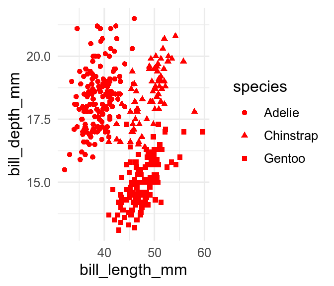
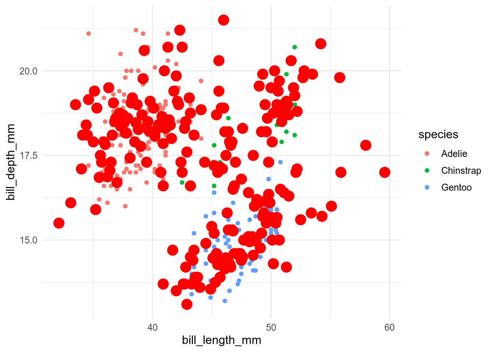
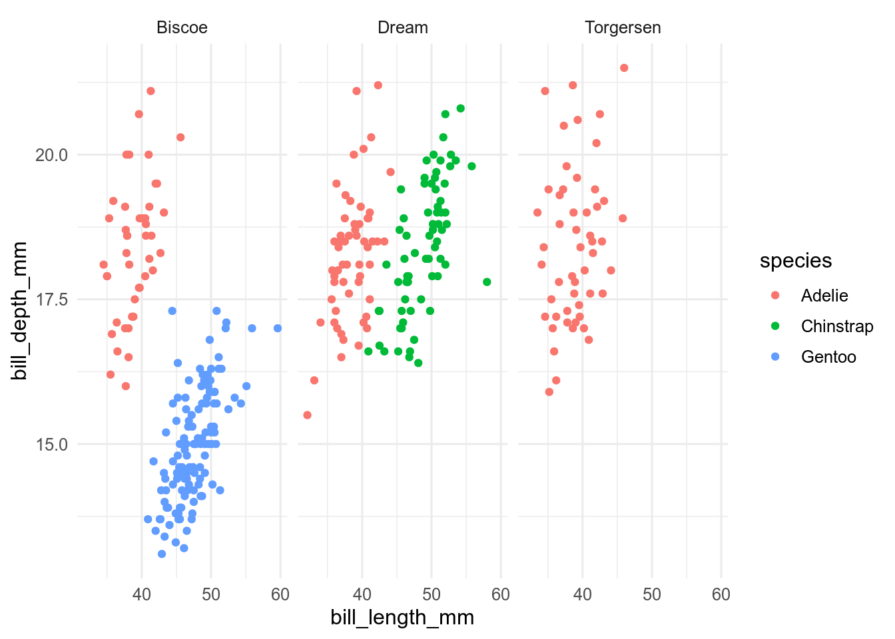

11 Getting started with ggplot
11.0.1 Before you start
You need to be
- familiar with different types of data (continuous, categorical)
- able to handle tibbles
- know how to install a package
11.1 Install the ggplot2 package
ggplot2 is part of tidyverse so if you have already installed tidyverse, you already have ggplot2 installed.
If not, see the section on installing tidyverse.
To activate ggplot2, you can use
But most of the time you can use library(tidyverse).
11.2 The basics
ggplot is based on the grammar of graphics, a terminology describing the components of a figure.
Let us have a look at these terms.
To produce a figure or plot, we take data values and use elements like dots, squares, lines, and colour to convert the data into a visual graphic. There are many different ways to make a figure, but there are some rules that apply in general. A plot is always built on data, and a number of other components called aestetics, geometry and scales. These different components combined make up a figure
11.3 The code
The basic code for a scatterplot looks something like this:
ggplot(data = penguins,
mapping = aes(x = body_mass_g, y = bill_length_mm, colour = species)) +
geom_point() +
labs(x = "Body mass, g", y = "Bill length, mm", colour = "Species") +
theme_bw()The main function is ggplot() and is used to define the data and the aesthetics.
The data is a data frame or tibble containing the variables to produce the figure.
The mapping uses aes() to describe how the variables should be mapped onto the aestetics, such as x and y location or colour.
Every other component of the plot is added with +.
It makes the code easier to read if you put a new line after each + (the + must go at the end of a line, not at the start).
These other elements include the graphical elements that display the data, usually created with a geom_*() function, labels created with labs(), and themes that change the non-data elements of the plot with themes().
You can think of it as different layers that are put on top of each other see 11.1.

Figure 11.1: Visualization of how ggplots are built.
11.4 The Palmer Penguin Example
We will mostly work with the Palmer Penguin data set [@Horst2020-jy]. If you are unfamiliar with the dataset have a look at this webpage: https://github.com/allisonhorst/palmerpenguins
To install the dataset run this code:
install.packages("palmerpenguins")
data(penguin, package = 'palmerpenguins')The datasets contains data on 344 individuals from three species of penguins, collected from tree islands in the Palmer Archipelago, Antarctica. It includes several morphological traits like bill length and depth, flipper length, body mass, and sex.
penguins## # A tibble: 344 × 8
## species island bill_length_mm bill_depth_mm flipper_length_mm
## <fct> <fct> <dbl> <dbl> <int>
## 1 Adelie Torgersen 39.1 18.7 181
## 2 Adelie Torgersen 39.5 17.4 186
## 3 Adelie Torgersen 40.3 18 195
## # … with 341 more rows, and 3 more variables: body_mass_g <int>,
## # sex <fct>, year <int>11.5 Building a ggplot figure
Now we will describe the different components a ggplot is made of.
11.5.1 Data
To make a figure we use the function ggplot().
The first element in this function is the data object containing all the variables that you need to make a figure
Generally, it is advisable to have the data in a long format.
For the penguin example this is how it will look like:
ggplot(data = penguins)The ggplot function will produce an empty plot, but not show any data.
11.5.2 Aestetics
The second element in the ggplot() function is called the aestetics.
The different elements from the aesthetics are used to display the data.
The most important element is the position which describes the location of the data on the plot, usually by x and y.
Other important elements are shape, fill, size, colour and line type, which describe how the data is presented on the plot.
In the penguin example, if we want to plot the bill length against the bill depth, we choose these two variables as x and y. As a second aesthetic we have chosen to define species as colour.
One thing that might be confusing about the argument colour is that it only allows to be a variable, for example colour = species or colour = island.
So for example colour = "red" does not work.
If you want to choose a specific colour, this has to be done in geom or in scales (see below).
Now the ggplot function has added the x and y axis to the plot.
11.5.3 Geoms
To plot the actual data, you need a geom function. There are many different geom functions that you can choose. See chapter 3. different plot types for an overview.
Here, we will use geom_point(), which displays the data as points (scatterplot).
Also, the legend is automatically plotted on the right side.
ggplot(penguins, aes(x = bill_length_mm, y = bill_depth_mm, colour = species)) +
geom_point()To come back to the previous point, if you want to make all the points red this can be done in the geom_point() function using colour = "red". Note that this time we choseshape = species`, another aesthetics to use different symbols for the three species.
ggplot(penguins, aes(x = bill_length_mm, y = bill_depth_mm, shape = species)) +
geom_point(colour = "red")
11.5.4 Scales
Scales as the name says is for scaling, converting, inverting. With scales you can manipulate the labels, breaks, transformations and palettes. In other words you can manually change the axis text, labels, ticks, add breaks, make transformations, and manipulate aesthetics like colour, shape, linetype.
Here is just a small selection to show what is possible. We can log transform the y axis, change the axis titles, and manipulate the colours.
ggplot(penguins, aes(x = bill_length_mm, y = bill_depth_mm, colour = species, group = species)) +
geom_point() +
scale_y_log10(name = "Log bill length in mm") +
scale_x_continuous(name = "Bill depth in mm") +
scale_color_viridis_d()11.5.5 Labs
labs() is a useful function to modify the axis labels, titles and legend.
The axis titles can be renamed, and a title and tag can be added.
ggplot(penguins, aes(x = bill_length_mm, y = bill_depth_mm, colour = species, group = species)) +
geom_point() +
labs(x = "Bill depth in mm", y = "Bill length in mm", title = "Bill length vs. depth in penguins", tag = "A")11.5.6 Stats
Stats are statistical transformations to summarize objects in the data in different ways. You can add means or confidence intervals on top of your data.
ggplot(penguins, aes(x = bill_length_mm, y = bill_depth_mm, colour = species, group = species)) +
geom_point() +
stat_summary(fun = "mean", colour = "red", size = 1)
11.5.7 Facets
Facets can be used to divide the data into different subplots, which can enhance readability of a figure.
In the penguin example we can show 3 different panels for each island. This way of plotting makes it easy to see which penguin species occurs on each island.
ggplot(penguins, aes(x = bill_length_mm, y = bill_depth_mm, colour = species)) +
geom_point() +
facet_wrap(~ island)
11.5.8 Themes
Themes is a powerful element that controls the look of the plot. In themes you can change, remove and add the background, gridlines, ticks, text, text size and much more.
In our example, we will change the axis tile text size, the colour of the axis text and change the theme to theme_minimal().
ggplot(penguins, aes(x = bill_length_mm, y = bill_depth_mm, colour = species)) +
geom_point() +
facet_wrap(~ island) +
theme_minimal() +
theme(axis.title = element_text(size = 14),
axis.text = element_text(colour = "purple"))11.5.9 A ggplots are built with layers
As you can see, there are almost no limits to what you can do in a ggplot. The trick is to know which element changes what and to remember all the names (i.e. what is axis.text and axis.ticks etc.).
The order in which you code the different components of a plot often does not matter (although there are discussions around that topic, see here). You can imagine the different components (geom, scale, stats) of the plot as different layers that are plotted on top of each other. Usually, the order is not so important, unless something needs to be plotted on top of something else. But this is easy to spot once you see the plot.
For examle, you want to plot the data below and the mean values on top, and not the other way round. See below, the red points showing the means have disapeard. So, the things you want on top are plotted after.
ggplot(penguins, aes(x = bill_length_mm, y = bill_depth_mm, colour = species)) +
stat_summary(fun = "mean", colour = "red", size = 2) +
geom_boxplot()11.6 Common mistakes
In the beginning you will make mistakes which will result in error messages, warnings or incomplete plots.
These mistakes often occur when one of the layers is missing, because a + is forgotten at the end of a line, due to a typo, or the data or other elements are forgotten.
Let us look at some common mistakes and how the ggplot is displayed or not.
11.6.1 No data
If you forget to specify the data ggplot will not be able to make a plot and you will get the following error message:
ggplot(aes(x = bill_length_mm, y = bill_depth_mm, colour = species)) +
geom_point()## Error: `data` must be a data frame, or other object coercible by `fortify()`, not an S3 object with class uneval.
## Did you accidentally pass `aes()` to the `data` argument?11.6.2 Missing aesthetics
If you forget to define the aesthetics aes() you will also get an error message and a empty image:
ggplot(data = penguins) +
geom_point()## Error: geom_point requires the following missing aesthetics: x and y11.6.3 Missing geometry
If the geometry is missing geom_point(), ggplot will draw a empty plot, with axis labels, but show not data, because you have not defined how to plot the data.
11.6.4 What’s next?
Next, we will show the essential elements of a plot (title, axes, legend, …) and you can learn how to change and adapt each of these elements. Further you can learn the most common plots types that are commonly used.